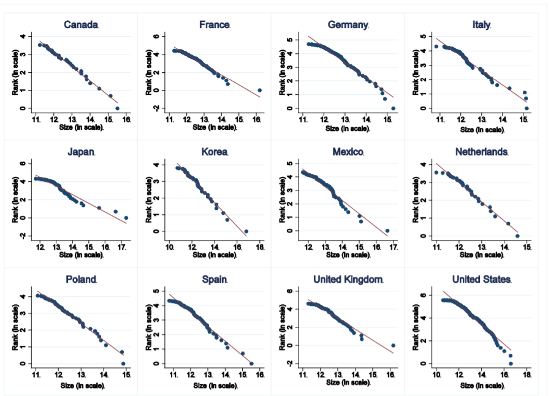
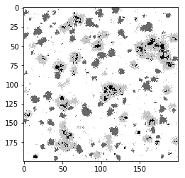
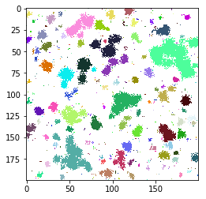
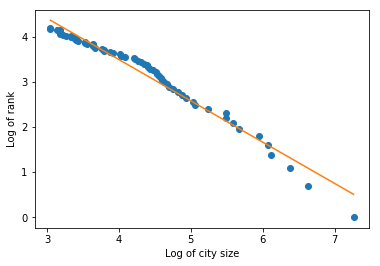

When analysing not one, but multiple cities, in real life, a certain city size distribution is often encountered. This distribution consists mostly of smaller cities and only several large cities. When plotted on a log-log scale, this suggests a power law distribution:

Since so far we have focused on the growth of a single city, we decided to analyse the distribution of multiple cities on a larger grid (200x200). A result is given below in Figure 2. We gave all the different cities a different colour and plotted the logarithm of the rank versus the logarithm of the city size. The rank is defined as the number of cities that is larger than itself. Also in this case, a linear line is observed, which again indicates a power law distribution. The power law fits the formula 601.997x-0.719. Power law behaviour is often observed in complex systems.
  